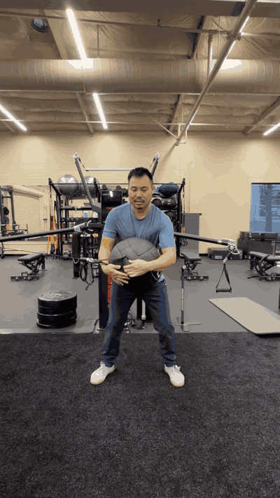
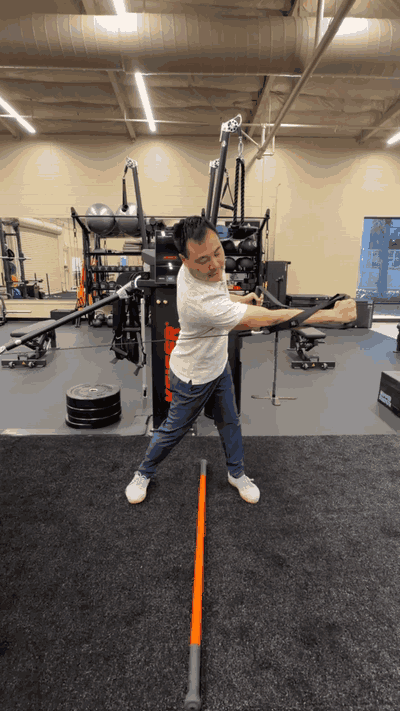
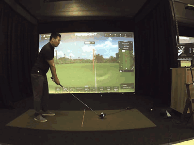

A six-month recovery and performance journey at The Turn — restoring mobility, rebuilding stability, and unlocking 55 more yards off the tee.
The client arrived with significant stiffness through the entire right leg — hip, knee, and ankle — lingering from an Achilles injury. The limitations showed up directly in the swing: they couldn't maintain single-leg stability, and couldn't disassociate the upper body from the lower body, robbing the swing of any reliable foundation or rotational power.

A TPI body-swing screen pinpointed restricted mobility from hip to ankle, no single-leg stability, and an inability to separate upper and lower body.

Targeted recovery and strength work returned full functional mobility to the leg, rebuilding a stable single-leg base to swing from.

With mobility and separation restored, average driving distance climbed from 210 to 265 yards — a stronger, more powerful, repeatable swing.
This is what The Turn is built for: PGA instruction, TPI-certified training, and recovery specialists working from the same assessment toward the same goal. We treated the body and the swing together — restoring mobility first, rebuilding stability and separation second, and converting that new foundation into real distance on the course.
Whether you're coming back from injury or chasing more distance, it starts with understanding how your body moves. Book a body-swing assessment and let's build your plan.
Book an Assessment